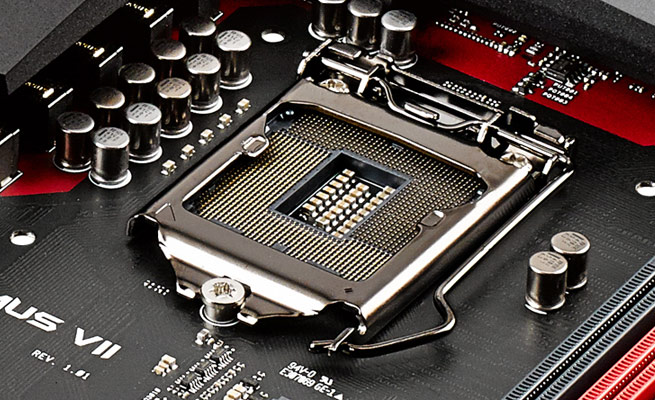
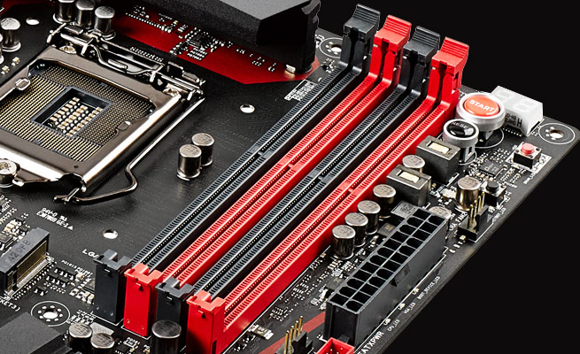
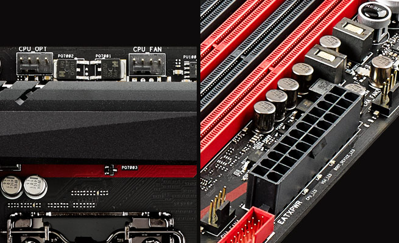
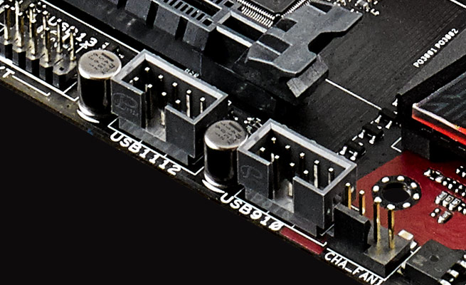

Matična ploča se sastoji iz različitih elemenata, koji se nalaze na njenom PCB-u (print circuit board), odnosno na štampanoj ploči. PCB služi kao osnova na koju se podom dodaju razni čipovi, naponske sekcije, procesorska podnožja, slotovi za memorije i kartice za proširenje, SATA portovi, različiti specijalni tasteri, pinovi i slično. U ovom tekstu ćemo se ukratko pozabaviti objašnjenjem najvažnijih elemenata savremenih matičnih ploča i pojasniti njihove osnovne funkcije. Nećemo se baviti svim komponentama niti detaljnim opisima njihovih funkcija, već samo komponentama koje su najvažnije za korisnike i sa kojima će korisnik vršiti interakciju.
Procesorsko podnožje (socket, slot) je mehanička komponenta koja omogućava mehanički i električni interfejs koji povezuje mikroprocesor i štampanu ploču (PCB). Prostije rečeno, podnožje služi da se u njega „smesti“ procesor. Nalazi se na matičnoj ploči uglavnom u gornjem centralnom delu, jasno je označeno i lako se raspoznaje. Montiranje procesora u podnožje je najčešće brzo i lako, ali uvek treba dobro proučiti uputstvo, naročito kada se pristupi montiranju kulera, pošto se mehanizmi montiranja razlikuju u zavisnosti od tipa podnožja.
Čipset je kontrolerska logika matične ploče grupisana unutar jednog čipa, koja određuje njene sposobnosti i mogućnosti. Čipseti su podeljeni po platformama i cenovnim razredima, i predstavljaju jednu od najbitnijih komponenti svake matične ploče. U današnje vreme se čipseti uglavnom nalaze ispod najčešće pasivnog (ređe aktivnog) kulera u donjem desnom delu matične ploče.
Konektori za napajanje predstavljaju tačke na koje se povezuju napajanja računara, kako bi se ploča i njene komponente snabdevale strujom. U praksi, imamo 20+4-pinski konektor na desnoj strani ploče, kao i 4+4-pinski konektor, najčešće smešten blizu procesora. Njihova funkcija je jasna i jednoznačna.
Naponska sekcija služi za regulaciju napona i održavanje napona (a samim tim i dotoka struje) konstantnim. Uglavnom se komponente koje je čine hlade pasivno (nekada i aktivno) i nalaze se raspoređene oko procesorskog podnožja. U principu, što je ploča kvalitetnija i skuplja, to je naponska sekcija veća, bolje hlađenja i impozantnije dizajnirana.
Memorijski slotovi su slotovi u koje se priključuje sistemska memorija, odnosno DRAM. Radi se o duguljastim, jasno označenim slotovima, uglavnom pozicioniranim u gornjem desnom uglu matične ploče, desno od procesora. Najčešće dolaze u naspramnim parovima i jasno je označeno u koje se parove treba povezati, kako bi se aktivirao dual/tripple/quad channel, zarad maksimalnih performansi. Ploče imaju dva, četiri, šest ili osam slotova, pri čemu se na većini matičnih ploča koje su od interesa za korisnike najčešće viđaju četiri slota.
Zadnji panel je panel sa portovima i konektorima koji će korisniku omogućiti da poveže periferije i druge uređaje, i zapravo je jedini vidljiv i dostupan element ploče nakon montiranja ploče i zatvaranja kućišta. Tu se nalaze USB portovi, audio konektori, LAN portovi, neretko i video izlazi (DVI, VGA, HDMI), serijski i printer portovi i sl. Na njih se povezuju eksterni uređaji, poput monitora, miša, tastature, rutera i tako dalje.
PCI Express (Peripheral Component Interconnect Express), ili kraće PCIe, jeste standard serijskog busa za proširenje i u ovakve slotove ubacujemo tzv. „kartice za proširenje“, odnosno kartice kojima proširujemo mogućnosti svog računara (video karte, zvučne karte, eksterni kontroleri), a koje dolaze sa PCIe interfejsom. PCIe ima mnoštvo dobrih karakteristika, uključujući visoke brzine, bolje performanse, bolje skaliranje, mogućnost direktnog priključivanja komponenti (hot-plug funkcionalnost), unapređeni I/O, bolju detekciju i prijavljivanje grešaka. PCI Express slotovi imaju oblik duguljastog kvadra, sa rupom u sredini u koju se smeštaju kartice za proširenje. Slotovi se fizički razlikuju, i to po dužini. Fizički PCIe slotovi mogu imati od jedne do 32 staze, što se označava oznakama x1 (1 staza), x4 (4 staze), x16 (16 staza) i tako dalje. Što više staza, slot je „duguljastiji“.
U svakodnevnom korišćenju, najinteresantniji su „grafički slotovi“, odnosno x16 slotovi, koji su dugački i lako uočljivi na matičnim pločama. U ove slotove se ubacuju grafičke karte kako bi se dobio maksimum performansi. Ostali slotovi su kraći, i uglavnom ispod ili između grafičkih slotova (ukoliko ih ima više). Na primer, x4 slot je duži od x1 slota. Takođe, moguće je PCIe uređaje ubacivati u „duže“ slotove. Obrnuto ne važi.
SATA portovi su konektori na koje povezujemo diskove, uključujući tu hard diskove, solid state drajvove i optičke uređaje. Drugim rečima, služe za povezivanje uređaja koje koristimo za skladištenje podataka. Malih su dimenzija i uglavnom smešteni u donjem desnom uglu ploče. Mogu biti okrenuti prema gore, zavijeni pod uglom od 90 stepeni, ili kombinovano, kako bi se korisniku omogućilo da maksimalno iskoristi prostor. Trenutno je aktivna revizija 3.2 ovog standarda, koja omogućava maksimalne brzine transfera od 600 MB/s.
Konektori za ventilatore su tropinski i četvoropinski konektori raspoređeni na ploči
(ima ih dva ili više, uglavnom tri do četiri komada, ali ima i ploča sa još više priključaka)
tako da se na njih mogu povezati kuleri procesora ili kućišta. Ovi konektori deluju kao da su „razbacani“,
ali su raspoređeni po ploči tako da ih kratki kablovi za napajanje kulera mogu dohvatiti. Treba razlikovati na koje se konektore
povezuju procesorski kuleri, a na koje kuleri kućišta, i takvi konektori se razlikuju po oznakama koje su pored njih.
BIOS (Basic Input/Output System) stiže u vidu čipa zalemljenog za ploču (jedan ili dva BIOSa se mogu naći na današnjim pločama).
Njegova osnovna funkcija jeste da inicijalizuje matičnu ploču, odnosno njene komponente,
kao i da učita odgovarajući operativni sistem nakon toga. Takođe, on testira hardverske komponente i služi kao „most“ putem koga
se vrši interakcija sa tastaturom i mišem, monitorom i drugim input/output uređajima.
Front Panel Headeri su skup priključaka koji deluju kao grupa gusto raspoređenih iglica/pinova. Služe za povezivanje odgovarajućeg interfejsa kojim ploča komunicira sa kućištem. Tako imamo označene pinove koji služe za povezivanje tastera za paljenje i resetovanje računara, indikatora rada, internog zvučnika i slično.
USB headeri su slični opisanim front panel headerima, sa tom razlikom što je njihova funkcija da obezbede priključivanje i obezbeđivanje dodatnih USB portova, bilo da se radi o USB portovima na prednjoj strani kućišta, bilo da se radi o dodatnim portovima sa zadnje strane računara.
Dodatni tasteri su razni dodatni tasteri čija implementacija, raspored i funkcija zavise od ploče do ploče. Najčešće se radi o dodatnim funkcijama, posebno optimizovanim za laki overkloking, i različiti proizvođači ih implementiraju na pojedine ploče, i nazivaju na različite načine. Tako često imamo Start i Reset tastere, tastere za brzo overklokovanje ili vraćanje na podrazumevane vrednosti. U principu, ovakvi tasteri nisu esencijalni (samim tim ih skoro i ne viđamo na najjeftinijim matičnim pločama), ali mogu biti veoma korisni određenim grupama korisnika, te su dobrodošao dodatak koji olakšava izvršavanje pojedinih funkcija.
Proizvođači:
AMD Intel
Čipset:
AMD A320 AMD B350 AMD B450 AMD B550 AMD TRX40 AMD X399 AMD X570 Intel B250 Intel B360 Intel B365 Intel B460 Intel H110 Intel H310 Intel H370 Intel H410 Intel X299 Intel Z270 Intel Z390 Intel Z490
Podržana memorija:
DDR3 DDR4
Formati matičnih ploča:
ATX E-ATX Micro ATX Mini ITXs
Podnožja matinih ploča:
AMD AM4 AMD TR4 AMD sTRX4 Intel 1151 (6. i 7. gen.) Intel 1151 (8. i 9. gen.) Intel 1200 Intel 2066